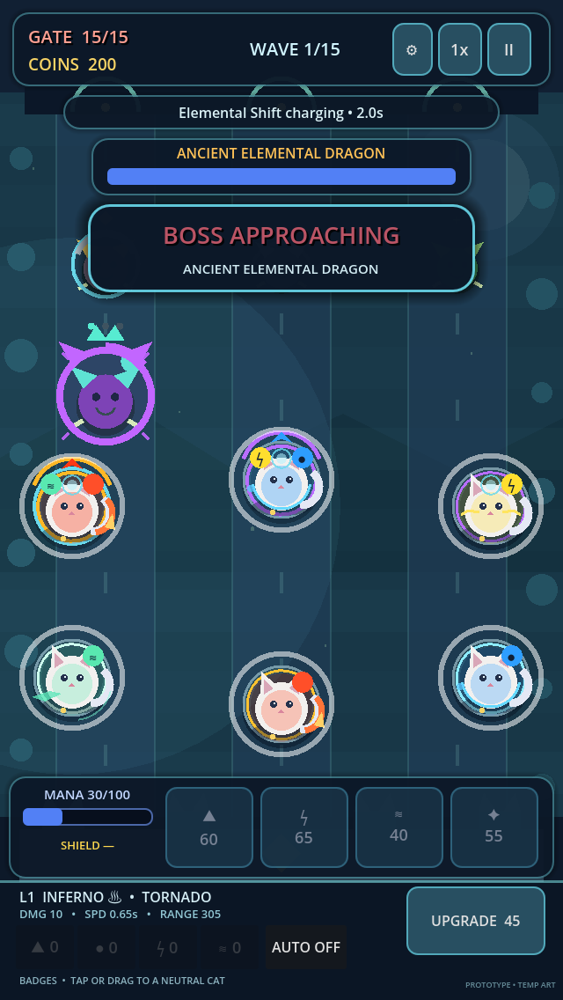

PLAYER SUPPORT
Keep the Moon Gate standing.
Find answers, protect your local save, and tell us when something gets past the guardians.

COMMON QUESTIONS
Quick help for your adventure
Where is my progress saved?
Campaign progress, unlocked cats, upgrades, achievements, and settings are stored locally on your device. Meowmancy does not currently provide account-based or cloud save synchronization.
Can I move progress to another device?
There is no in-game transfer tool yet. An encrypted device backup may preserve app data, but transfer and restoration depend on Apple’s backup system and are not guaranteed by Meowmancy.
What happens if I delete the app?
Deleting the app removes its local data from that device. A device backup may retain a copy under your Apple backup settings. Reinstall only after confirming you have any backup you intend to keep.
When does the Daily Challenge reset?
The challenge changes at 00:00 UTC each day. A challenge already in progress keeps its original date and rules until you finish or leave the run.
Does the game need an internet connection?
Core gameplay and Daily Challenge generation work offline. You still need a connection for App Store installation, updates, and GitHub support.
Does Meowmancy contain purchases or ads?
The current game build does not include advertising or in-app purchases. If that changes, the game, store disclosures, and privacy policy will be updated before release.
How can I reduce effects or adjust sound?
Open Settings from the Cat Kingdom or battle pause menu. You can lower graphics quality, reduce effects and damage numbers, disable haptics, and adjust Master, Music, SFX, and UI volume independently.
Why is a stage or mode locked?
Campaign stages unlock in sequence. Endless Survival unlocks after clearing Moon Gate. Cats and Kingdom upgrades may also require Guardian Rank and permanent currency.
TROUBLESHOOTING
Try these steps first
- 1Pause safely
Finish the current decision or wave boundary when possible, then return to the Kingdom before closing the game.
- 2Restart the app
Fully close Meowmancy and open it again. Avoid repeatedly tapping Play while a scene is loading.
- 3Check your device
Confirm you have free storage and are using a supported, current iOS version.
- 4Capture the details
Record the exact screen, stage, wave, action, and any message shown before reporting the issue.
BUG REPORTS
Help us reproduce the problem
Open a GitHub issue and include the information below. Please do not post personal information, Apple receipts, account credentials, or device identifiers.
- Device model and iOS version
- Meowmancy version and build number
- Stage, mode, and approximate wave
- Steps that reproduce the issue
- Expected and actual result
- Screenshot or short recording, if safe to share